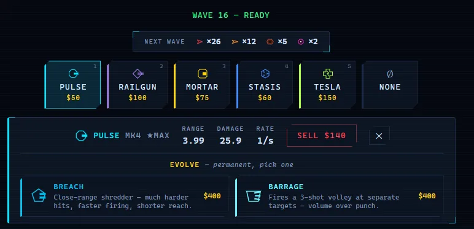
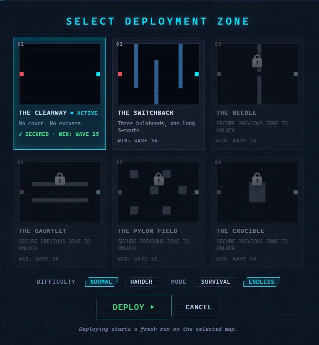

Rust Rush, a tower defense game
Real-time browser tower defense.
Go · React · WebSockets
- Status
- Live
- Phases
- 23
- Maps
- 6
- Tower forms
- 15
- Server loop
- 60 FPS
- WebSocket messages
- 60/sec
- Go tests
- 47
- Build time
- 6 months
Why I built it
I'd never made a game before. I have played a lot of them, though, and tower defense is the genre I keep coming back to: Fieldrunners, Bloons, Plants vs. Zombies. I wanted to try building my own version and learn something in the process.
The original plan was to learn Rust. The first prototype used Macroquad, a Rust game engine that opens a native desktop window, and it didn't last long. A downloadable exe has less portfolio value than a link anyone can click, and Macroquad would have meant writing the entire frontend in Rust too. So the project shifted to a Go server with a React client. I'd taken a Go course a while back and this was a chance to refresh it with a real project, and everything else, WebSockets, Canvas rendering, game loops, pathfinding, was new territory. The Rust in Rust Rush survived as a crab theme rather than the language. The name was too good to throw away.
What it is
Rust Rush is a real-time tower defense game that runs in the browser. You place towers on a grid, enemies path around them toward your goal, and you survive escalating waves by upgrading, evolving, and selling towers as the economy allows. It's live at rust-rush.jaime.build, self-hosted on my home server behind a Cloudflare Tunnel.
The architecture is the part I'm most deliberate about: the game is fully server-authoritative. Every piece of game logic, pathfinding, tower targeting, projectile physics, damage, wave spawning, win and loss detection, runs in Go at 60 frames per second. The React client draws the state the server sends over a WebSocket 60 times a second and sends back player inputs, and that's all it does. No game outcome is ever computed in the browser, which means there's nothing for a player to tamper with client-side.

There are 5 base tower types, each with a distinct job. Pulse is the reliable workhorse, Railgun the long-range single-target specialist, Mortar the splash damage, Stasis the slow debuff, and Tesla the chain lightning that arcs between enemies. Each tower upgrades through 4 levels, and at MAX level every tower can permanently evolve into one of two terminal forms, 10 in total, from a piercing rail shot that punches through everything in a line to a support tower that deals no damage at all and instead buffs its neighbors.
The game has 6 maps, each a different obstacle layout, unlocked one at a time in a fixed sequence. Every map has a win wave: survive to it and you get a Zone Secured victory screen with the option to keep going in Endless mode. Beating a map also unlocks a Harder difficulty on it, with a tighter economy and tougher bosses. Enemies path around your towers with BFS pathfinding that recalculates in real time, so placing a tower mid-wave instantly reroutes everything on the board.
On top of that sits a full presentation layer: a sci-fi visual theme where towers are geometric hardware and enemies are heading-rotated craft, procedurally synthesized sound with no audio files anywhere in the project, screen shake, a settings menu, hotkeys, real speed controls with a true pause, and an in-game glossary covering every tower, evolution, and enemy type. A private SQLite stats store records one row per completed game behind an admin login, with no player accounts anywhere.
The stack, and why
Go. I'd taken a Go course before this project and wanted to put it to real use. It turned out to be a great fit for a game server: goroutines handle the wave spawner and the 60 FPS loop naturally, and channels gave me a clean answer to problems like "cancel this wave mid-spawn when the player hits New Game."
React and TypeScript. Once the native-window Rust prototype was out, the frontend needed to be a web app, and React was the natural pick. TypeScript earned its keep by forcing the client's types to mirror the server's Go structs, so a field added on one side couldn't silently go missing on the other.
HTML5 Canvas. A tower defense game redraws dozens of moving objects 60 times per second, which is exactly what the DOM is bad at and Canvas is built for. The whole board is one canvas element with an animation loop reading game state from refs.
WebSockets. The server broadcasts a full game snapshot 60 times per second and the client sends inputs back on the same connection. Gorilla WebSocket on the Go side, a custom hook on the React side.
BFS pathfinding. Enemies need the shortest path around whatever the player has built, recalculated every time a tower is placed. BFS on a uniform grid gives that without the extra machinery of A*, and a later optimization pass rewrote it as an integer-indexed search, 47 times faster than the first version and proven byte-identical across 500 randomized boards.
SQLite. The stats store needed to be tiny: one row per completed game, no accounts, no names. A pure-Go SQLite driver meant no database container and no C toolchain in the build, just a file on a volume mount.
Self-hosting over a platform. The plan was originally to deploy on a hosting platform, but by mid-2026 Railway and Fly.io had dropped their free tiers and Render's remaining one cold-starts after 15 minutes idle, which kills an always-on WebSocket game. So it runs in Docker on my home server instead, routed through a Cloudflare Tunnel with no ports opened to the internet, the same pattern as everything else I self-host.
The interesting parts
Making the server the only source of truth
Early on, some game logic lived in the browser. The turning point was moving all of it to the server and demoting the client to a pure renderer. It paid off three ways: the client can't cheat, the client can't drift out of sync with the rules, and every behavior has exactly one implementation to test.
Keeping that discipline took ongoing effort. A duplicate BFS implementation snuck into the client for debug spawns and had to be deleted. The wave preview strip could have recomputed wave composition in TypeScript, but instead the server includes it in every snapshot, built from the same function that spawns the waves, so what the preview shows and what arrives can never disagree. Even the fast-forward button's state comes from the server, which means it survives a page reload mid-game.
Tuning the difficulty curve
The first playable version had a problem: I survived to wave 55 with $67,000 in the bank. Enemies had flat stats at every wave, so towers got relatively stronger forever and gold piled up faster than it could be spent.
The fix was scaling enemy health and speed at spawn time, and the tuning took two passes. The first attempt applied a 15% compound health multiplier from wave 1, and I was dead by wave 6. The second started a 10% multiplier at wave 5 instead, giving the early game a grace period before the wall arrives, plus a speed ramp capped at +80% and a quadratic bump in enemy counts past wave 10. Playtesting settled at a consistent game over around wave 22, which was the target. Compound scaling needs a grace period. A curve that feels fair at wave 15 is brutal at wave 1.
The evolution system, and one accounting trick
Tower upgrades plateau at level 4, and for a long time that was just where progression ended. The evolution system replaced that plateau with a real decision: every MAX-level tower can permanently transform into one of two specialized final forms. Pulse forks into a close-range shredder or a multi-shot volley. Stasis becomes either a constant slow aura or a single-target root. Tesla splits into a continuous laser or a support tower that buffs its neighbors and never fires a shot.
Evolving costs twice everything you've spent on that tower so far, and the design detail I like most is where that cost goes: it's added to the tower's running total-spent figure. Selling any tower refunds 70% of total spent, so by folding the evolution cost into the same number, the sell-refund math needed zero special cases.
It's also the game's first irreversible action. Nothing else in Rust Rush is permanent, so the evolve flow shows both options up front and asks for confirmation before committing, the only confirmation dialog in the game.

My difficulty instinct was backwards
The 6 maps needed an unlock order from easiest to hardest, and my instinct was obvious: more obstacles means harder. Rank them by wall count, done.
My own playtest data disagreed. The Clearway, a completely open board with zero obstacles and the shortest possible path, produced my best run in the entire project, wave 25 with a new high score. Meanwhile obstacle count and path length pull difficulty in opposite directions: walls eat buildable cells, which means less total firepower, but they also stretch the path, which means every enemy spends more time inside tower range. Neither effect can be eyeballed in isolation.
So instead of guessing, I ranked the maps with a measured simulation: a deterministic bot playing every map with identical fixed tower budgets at six spending levels, no upgrades, no clever placement, summing waves survived and score across all runs. The result confirmed the instinct was wrong. The Switchback, the map with the most obstacles and the longest path, measured as the easiest in the roster, because its 44-cell route gives towers more than twice the time on target of a 20-cell map. The simulation lives in the repo as a test, so the ranking is reproducible, and the final unlock order came straight from its output.

An audit that found bugs months old
Midway through the project I ran a full audit of the documentation against the actual code, verifying every claim in the TODO and README rather than trusting the checkboxes, with AI review helping work through the roughly 280 claims. Most held up. Eleven were wrong, and two of the wrong ones were real behavior bugs that had been latent for months, both proven with a failing test before the fix.
The first: "trapped enemies stop moving" was false. An enemy fully walled in by towers was treated as having reached the goal, so it dealt 10 damage and vanished. The documented behavior, and the fair one, is that a trapped enemy waits and resumes when a path reopens, which is what it does now. The second: the "wave freezes when path blocked" fix only covered blocking a path mid-wave. Starting a wave against an already-blocked path soft-locked the game forever.
The same pass caught a class of concurrency bugs waiting to happen: the WebSocket hub's client map was being written from three goroutines with no synchronization, two connections arriving at the same moment could create duplicate rooms with doubled game loops, and a race in the wave-start handler could double-spawn a wave. All of it got mutexes, atomic gates, and a stress test. Docs and code drift apart, so I check one against the other on a schedule now.
Sound with no sound files
The game has music and sound effects, and the repo contains zero audio files. Everything is synthesized live in the browser through the Web Audio API: oscillators, filters, and envelopes. The background music is a generative ambient pad, a low drone with a sparse arpeggio wandering over it, so it never loops in a way you can catch. The effects are deliberately minimal, four in total: explosions, plus one-off stings for evolving a tower, starting a wave, and game over. No placement clicks, no per-shot pew-pew, because a late wave has dozens of towers firing and that gets exhausting fast.
Procedural audio fit the project for practical reasons too. There are no samples to license, manage, or ship, and synth sounds fit a neon sci-fi game. The whole sound engine is one TypeScript file.
Pausing a game that lives on a server
Pause sounds trivial until the simulation runs on a server. The 60 FPS loop, the projectiles in flight, the tower cooldowns, and a separate goroutine actively spawning the current wave on its own timers all have to freeze together and resume with no catch-up jump.
The implementation keeps the 60Hz loop ticking but has the update function return immediately while paused, so nothing advances. The spawn goroutine holds its timers rather than sleeping through them, so an enemy due in two seconds is still due in two seconds after a ten-minute pause. Pause also composes with the speed control: pause at 3x, resume at 3x.
What's next
The project hit my "done for now" milestone with the July 30 deployment, and I mean the "for now." The deprioritized list is real: a map editor with user-created maps, multiplayer with a co-op mode, user accounts with a proper leaderboard instead of the current per-browser high score, and achievements. Smaller items first, like showing the special stats (slow duration, splash radius) in the tower info panel, which the towers already track internally but the UI never displays. The four later maps also got their difficulty ranking from the simulation rather than my own full playthroughs, so a spot-check run on each is on the list if anything ever feels off.
What I'd do differently
I'd write the balancing simulation earlier. The fixed-budget bot that ranked the maps took one session to build and immediately settled a question I'd been reasoning about by feel, and it would have been just as useful back when I was hand-tuning the health curve through trial and error. I'd also keep documentation honest as I go rather than in periodic sweeps. The mid-project audit found real bugs precisely because the docs had drifted far enough from the code to be worth checking, and catching that drift at write time is cheaper than digging it up months later.